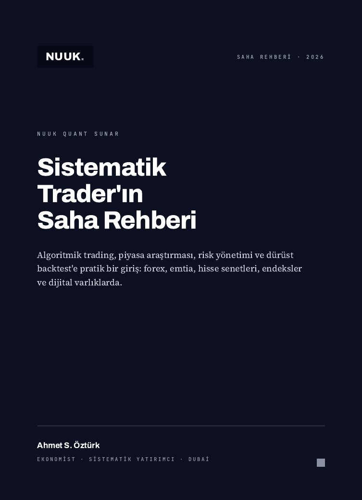

2.290 $
499 $tek seferlik
Kurucu üye fiyatı · İlk dönem
Bir kez ödersin · Aylık ya da gizli ücret yok · Ödeme şimdilik yalnızca kripto (USDT) ile
Tahminle işlem yapmaktan yorulanlar için
NUUK'ta her gün kullandığımız yöntemi baştan sona öğreneceksin: finansın temelleri, algoritmik trading, Gann'ın fiyat ve zaman analizi, yapay zekâyla kendi finansal sistemini kodlamak.
Başarılı masalar grafiğe daha fazla çizgi çekerek değil; kuralları belli, test edilmiş ve riski önceden hesaplanmış bir sistemle çalışır. Eksik olan yeni bir araç değil, bakış açısı.
Sorunindikatörde değil.
Sorun, birsistemin olmaması.
Sinyal gruplarıbunu çözmez.
Bunu kendi kurduğunsistem çözer.
İster sıfırdan başla, ister yıllardır grafik başında ol: bu program, grafiği yorumlamakla kuralları belli bir sistemi çalıştırmak arasındaki farkı kapatır.
Kazanımlar
Yazılı risk kuralların ve her işlemde lotunu kendisi hesaplayan bir araç.
Geriye dönük testi ve ileriye dönük doğrulaması yapılmış en az bir strateji.
Kendi Gann indikatörün ve geçmiş verilerle sınanmış seviye kuralların.
Yapay zekâyla yazdırdığın, MT4/MT5'te çalışan bir işlem robotu (EA).
Bütün hesaplarını ve işlemlerini tek ekranda gösteren kişisel bir panel.
Müfredat
Altı modül, sıfırdan ileri seviyeye. İlk mum grafiğinden, yapay zekâyla kodladığın kendi sistemine kadar.
Modül sonunda elinde: kendi piyasa takip panon ve haftalık makro notun.
Modül sonunda elinde: yazılı risk kuralların ve otomatik lot hesaplayıcın.
Modül sonunda elinde: geriye dönük testi ve ileriye dönük doğrulaması yapılmış ilk stratejin.
Modül sonunda elinde: kendi Gann indikatörün ve geçmiş verilerle sınanmış seviye kuralların.
Modül sonunda elinde: yapay zekâyla yazdırdığın, çalışan bir işlem robotu ve kişisel trading panelin.
Modül sonunda elinde: sana ait, test edilmiş ve kendi panelinden takip ettiğin bir trading sistemi.
Modül 4'teki araçlardan biri
Bir fiyat gir, Gann'ın karekök hesabına göre olası destek ve direnç seviyelerini gör. Modülde bu seviyeleri koda dökmeyi ve geçmiş verilerle sınamayı öğreneceksin.
Bu araç eğitim amaçlıdır; işlem sinyali ya da yatırım tavsiyesi değildir.
Modül 5
Yazılımcı olmana gerek yok. Ne istediğini açıkça tarif etmeyi, ortaya çıkan kodu test etmeyi ve güvenle çalıştırmayı öğreneceksin. NUUK'un kendi sistemleri de bu yöntemle kuruldu.
Fark
Programı kim hazırladı
Programdaki her yöntem, masada gerçekten kullandığımız işlerden çıktı; kitaplardan derlenmiş teori değil.
17 yıl ve 3.000+ rakamları nuukquant.com'da yayımlanan NUUK kayıtlarına dayanır.
Ahmet Öztürk
NUUK Quant kurucusu
Masada kullanılan işlem robotlarını, yatırımcı panelini, mobil uygulamayı ve veri altyapısını yapay zekâyla kendisi kurdu. Bu programda o sistemlerin nasıl kurulduğunu adım adım anlatıyor.
Kimler için
Modül 1 en temelden başlar. Sırayla ilerlediğinde nereden başlayacağını düşünmezsin; her hafta öğrendiklerini bir öncekinin üzerine koyarsın.
Grafiği okuyorsun ama sonuçların istikrarsız. Kurallarını önce yazıya, sonra koda dökmeyi ve test etmeyi öğrenirsin.
Teknik bilgin hazır. Onu piyasa yapısı, risk yönetimi ve Gann'la birleştirdiğinde ortaya çalışan bir sistem çıkar.
Fiyat
2.290 $
499 $tek seferlik
Kurucu üye fiyatı · İlk dönem
Bir kez ödersin · Aylık ya da gizli ücret yok · Ödeme şimdilik yalnızca kripto (USDT) ile


Kitap
Sistematik Trader'ın Saha Rehberi (The Systematic Trader's Field Guide): algoritmik trading, piyasa araştırması, risk yönetimi ve dürüst backtest'e pratik bir giriş. Forex, emtia, hisse senetleri, endeksler ve dijital varlıklarda geçerli.
29,99 $tek seferlik · iki baskı birlikte
Örnek: kapak, içindekiler, giriş ve 1. bölüm · English sample
SSS
Hayır. Modül 1 en temelden başlar ve konular sırayla ilerler. Her modülün sonunda elinde somut bir çalışma olur; nerede kaldığını her zaman bilirsin.
Hayır. Yapay zekâyla kodlama modülü tam da bunun için var: yapay zekâya ne istediğini doğru anlatmayı, çıkan kodu test etmeyi ve güvenle çalıştırmayı öğrenirsin. Kod biliyorsan daha hızlı ilerlersin.
Haftada 3–4 saat, dersleri ve canlı seansları takip etmeye yeter. Bitirme projesindeki demo test kendi kendine çalışır; senin işin her gün sonuçlara göz atmak.
MetaTrader 4 ya da 5, Python, VS Code ve bir yapay zekâ kodlama aracı (Claude Code ya da Cursor). Hepsinin ücretsiz sürümü ya da deneme planı var. Yapay zekâ aracının aylık ücreti üyeliğe dahil değil.
Hayır. Bu bir eğitim programı. NUUK yatırım için para kabul etmez, hesap yönetmez ve kazanç sözü vermez. Amacımız, kendi kararlarını veren ve kendi sistemini kuran biri olman.
Bazı Gann kuralları bazı piyasalarda istatistiksel olarak anlamlı sonuç veriyor, bazıları vermiyor. Gann Lab'de bu kurallara inanmayı değil, onları test etmeyi öğrenirsin; işe yaramayanı elersin.
İkisi de. Kayıtlı dersleri kendi hızında izlersin; her hafta canlı seansta piyasayı ve kodu birlikte inceler, sorularını cevaplarız.
"Yerini ayırt" düğmesine bas; WhatsApp'ta doğrudan bizimle yazışırsın. Mesajın hazır yazılmış olarak açılır, göndermen yeterli. Kitap için "Kitabı al" düğmesi aynı şekilde çalışır.
Şimdilik yalnızca kripto para (USDT) ile ödeme alıyoruz. WhatsApp'tan yazdığında USDT cüzdan adresini sana iletiyoruz.
Evet. 499 $'ı bir kez ödersin; aylık ya da yıllık ücret yok. Modüller, şablonlar, WhatsApp topluluğu ve canlı seanslar bu ücrete dahil.